Almoço e jantar
Pratos bem servidos, opções variadas, carnes, risotos, massas e combinações para compartilhar.
Restaurante • Café • Drinks • Experiências
O Gran Armazém é um convite para comer bem, brindar momentos especiais e viver uma experiência acolhedora em Canoas.
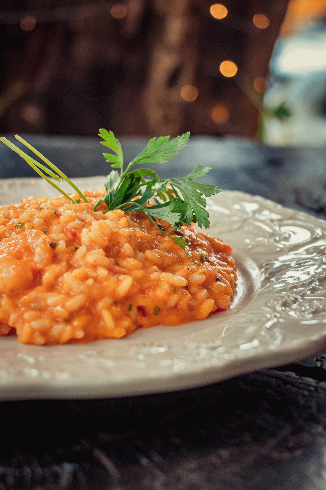
Sobre o Gran
Inspirado por histórias, detalhes e momentos especiais, o Gran Armazém une gastronomia, ambiente aconchegante e atendimento acolhedor para transformar uma refeição em experiência.
Ideal para almoço, jantar, café, drinks, encontros entre amigos, comemorações e aquele momento tranquilo para aproveitar bem o dia.
O que encontrar
Pratos bem servidos, opções variadas, carnes, risotos, massas e combinações para compartilhar.
Ambiente perfeito para café da manhã, pausa da tarde, tortas, doces e momentos mais leves.
Uma carta de bebidas para brindar, conversar e aproveitar a noite com conforto e estilo.
Sabores do Gran
Risoto de camarão, risoto de espinafre, picanha para duas pessoas, bacalhau, tábuas, bebidas e opções especiais para compartilhar.
Ver cardápio / pedir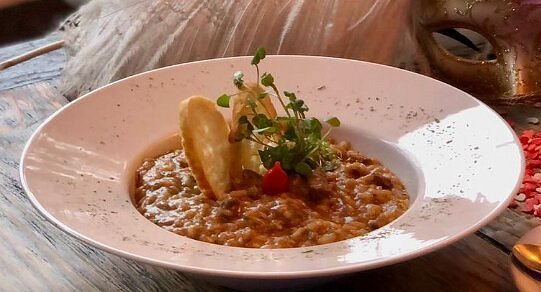
Risotos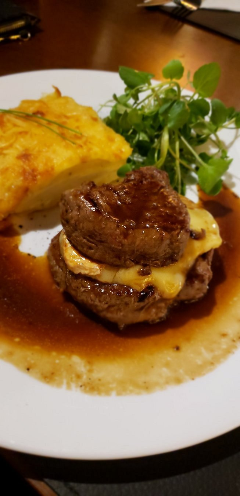
Carnes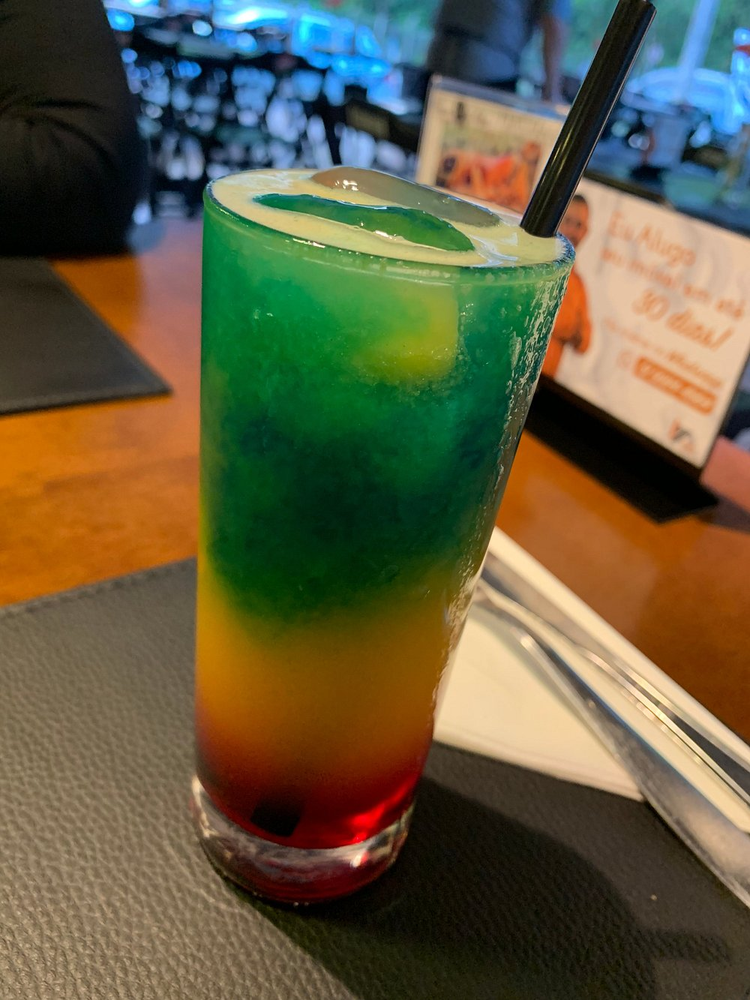
Drinks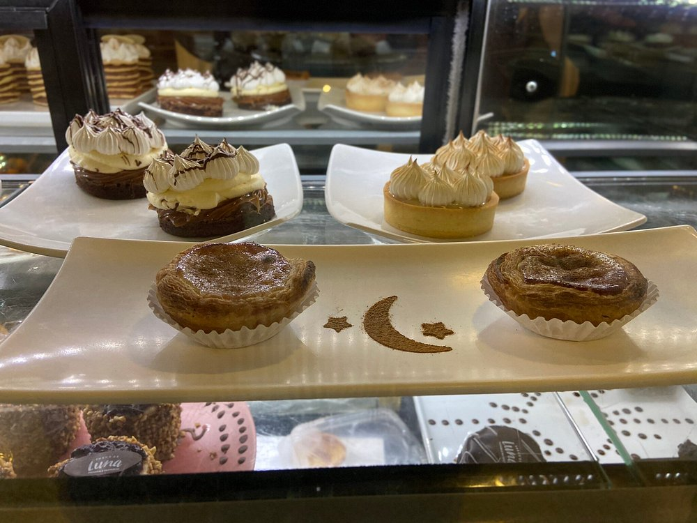
SobremesasFotos
Substitua as imagens da pasta assets por fotos reais autorizadas pelo restaurante.
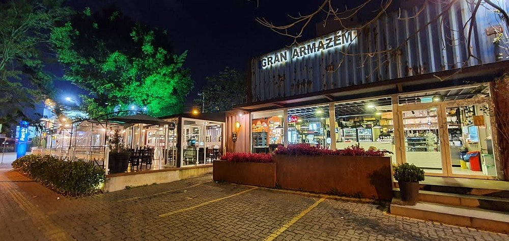
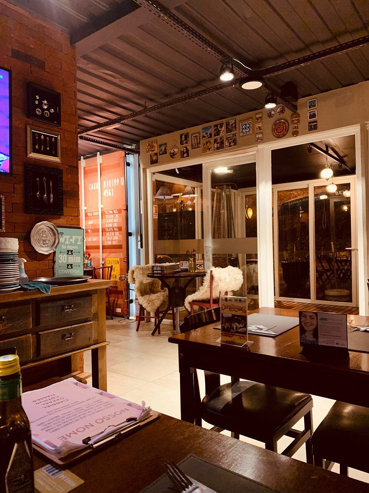
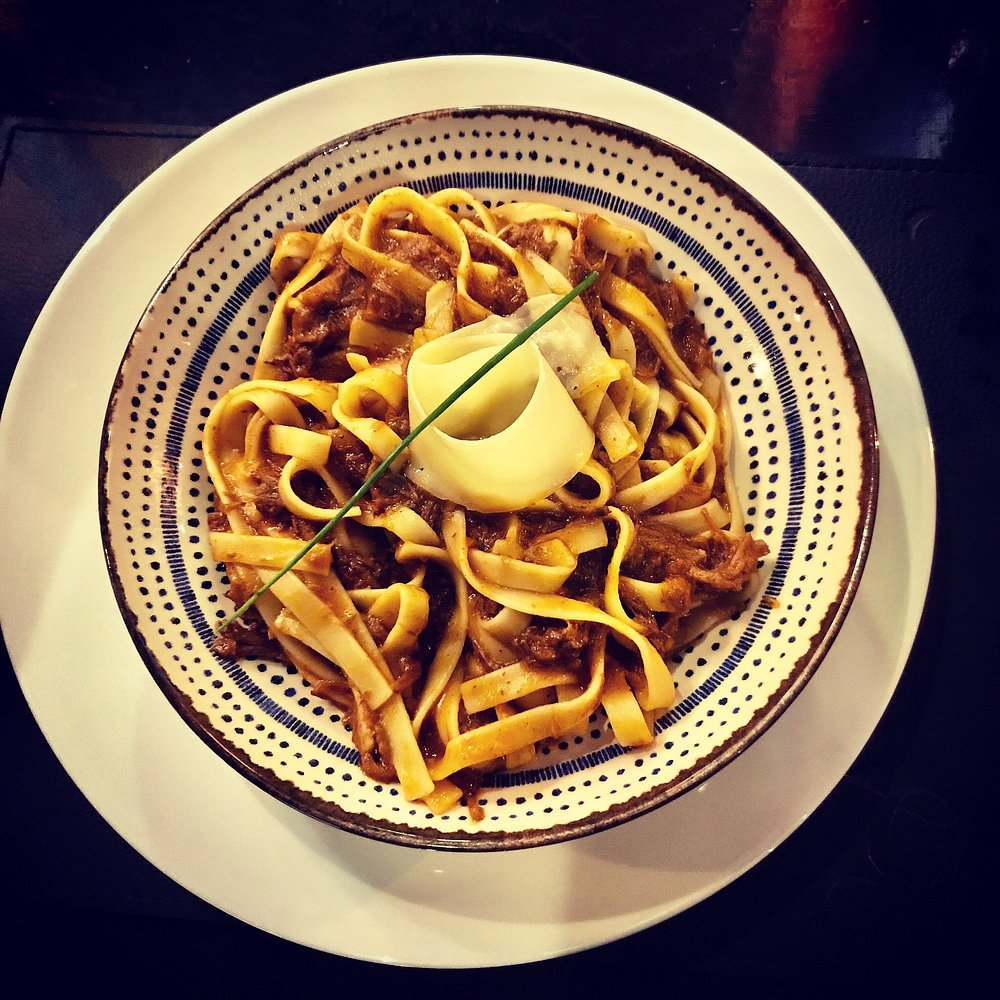
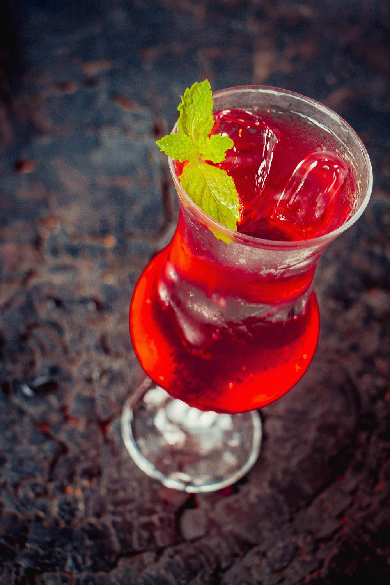
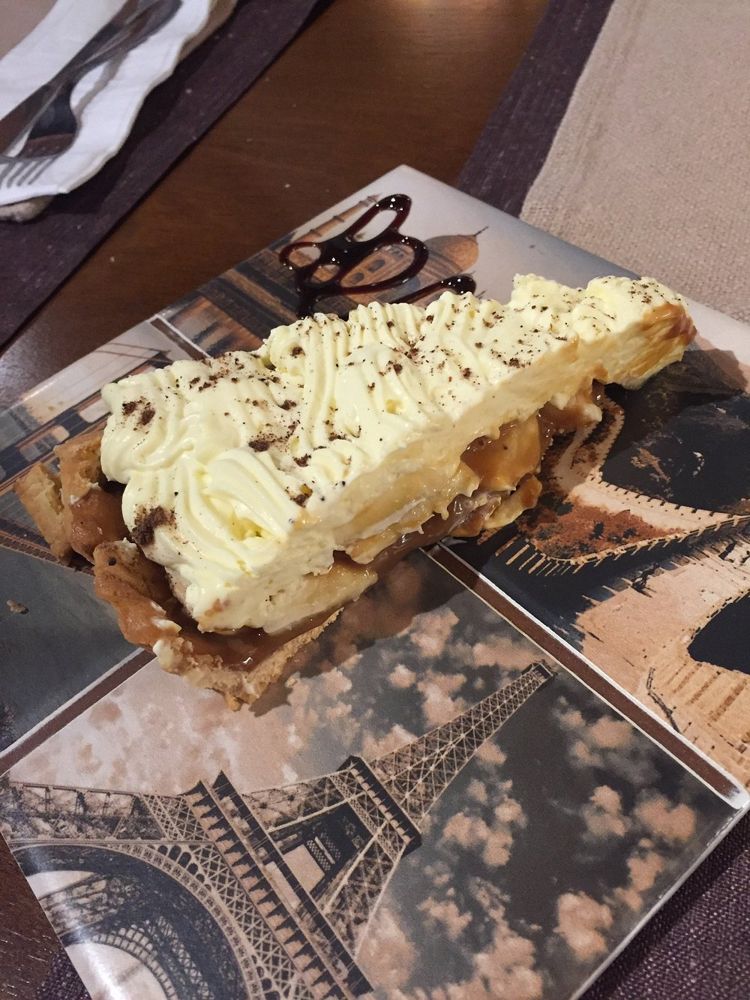
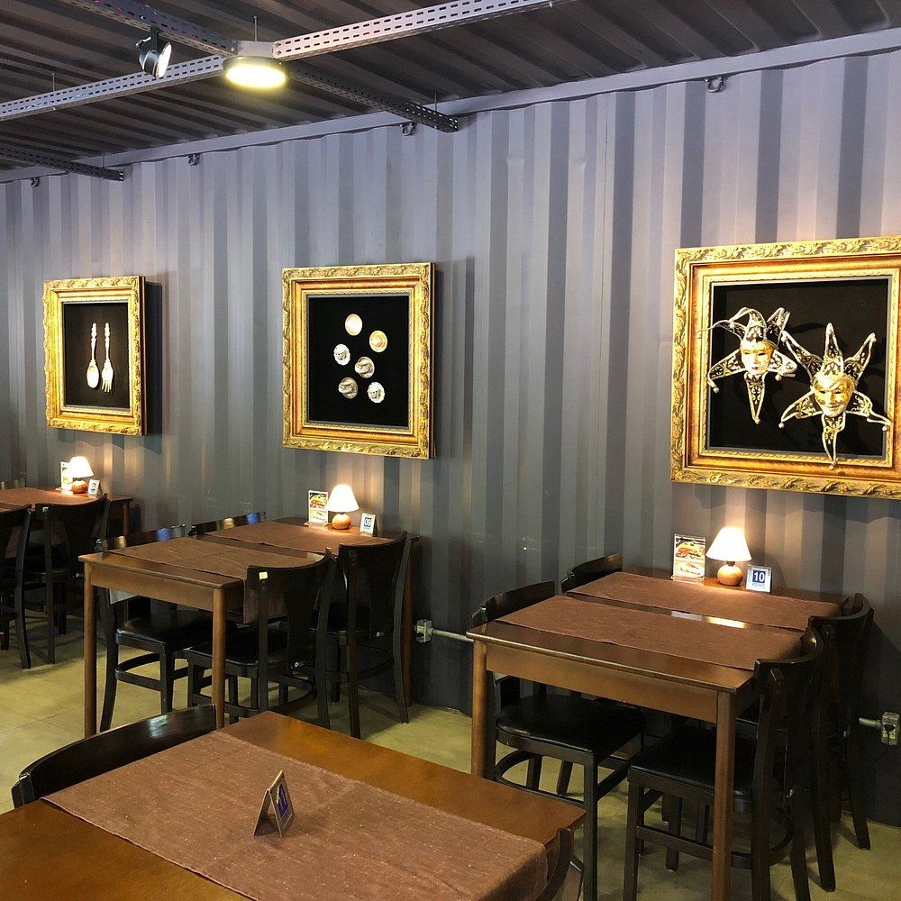
Vídeos
Para manter HTML e CSS puro, use vídeos baixados/autorizados em MP4 dentro da pasta assets.
Ambiente, pratos, atendimento e detalhes que fazem parte da experiência.
Reflexões sobre os pratos e sabores que tornam o Gran Armazém único.
Avaliações
“Ambiente acolhedor, comida excelente e uma experiência diferente em Canoas.”
Cliente Gran“Ótima opção para almoço, jantar, drinks e sobremesas.”
Cliente Gran“Lugar bonito, atendimento cordial e pratos muito bem apresentados.”
Cliente GranContato
Endereço: Dr. Sezefredo Azambuja Vieira, 851 — Marechal Rondon, Canoas/RS
Horário: Segunda a sábado, das 9h às 23h
Telefone: (51) 3922-4321
WhatsApp: (51) 99422-9195